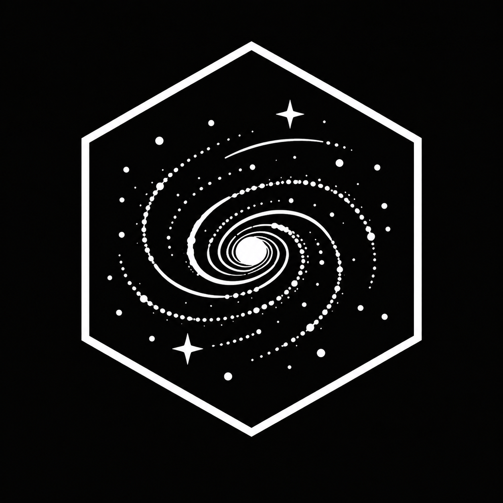

ALÉTHEIA · ARCHIVO PLANETARIO
THALARA
Mundo documentado
ALÉTHEIA I
PRIMERA APARICIÓNALÉTHEIA I
OBS-THA-01
ENLACE DE OBSERVACIÓN ACTIVO
REGISTRO DE EXPLORACIÓN

MÓDULO OBSERVATORIO
ARCHIVO PLANETARIO
MUNDOS EXPLORADOS
Más allá del Sistema Solar, las misiones de ALÉTHEIA han cartografiado mundos muy distintos. Algunos estériles. Otros hostiles. Y alguno cambió para siempre nuestra idea sobre la vida en el universo.
ALÉTHEIA · ARCHIVO PLANETARIO
Mundo documentado
PRIMERA APARICIÓNALÉTHEIA I
OBS-THA-01
ENLACE DE OBSERVACIÓN ACTIVO
REGISTRO DE EXPLORACIÓN